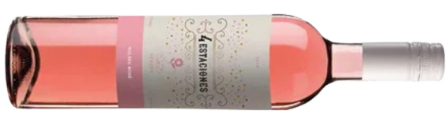
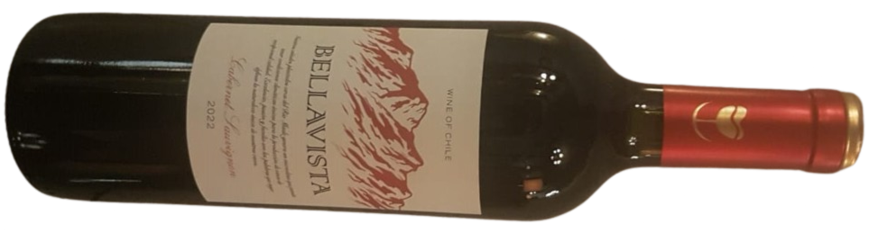
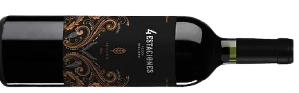

Entradas

Carpaccio 79,90
Queijo Brie no Pão 85,00
Burrata 85,00
Porção de Pão 8,00

Ossobuco

Ossobuco com redução de vinho, mirepois de legumes servido sob purê de batatas.
Risoto de Pêras

Risoto com gorgonzola e pêras caramelizas com leve toque de alecrim.
Sobremesa
Petit Gateau 35,00


Pizzas Salgadas
Pizzas Napolitana de longa fermentação com molho de tomate italiano caseiro (30 cm)
Caprese 75,90
Capri 75,90
Toscana 75,90
Pisa 75,90
Positano 75,90
Pizzas Doces
(Individual)
Cartola 25,00
Veneza 25,00
Bebidas
Água mineral 7,00
Água mineral com gás 7,50
Refrigerante 8,50
(Lata)
Suco de uva integral 12,00
(Taça)
Cerveja Artesanal 30,00
(Baden Baden)
Café Expresso 8,00
Shot de Limão 2,00
Drinks
Caipirosca 34,00
Moscowmule 36,00
Gin Tônica 39,00
Aperol Spritz39,00
Limoncello Gin 39,00
Clericot 140,00

Espumantes
ITÁLIA
01. Gran Dessert99,00
Região Norte da Itália
 Blend de uvas brancas
Blend de uvas brancas

BRASIL
02. 1913 Sparkling Branco Brut99,00
Bento Gonçalves
Uvas Brancas
 Método Chamat
Método Chamat

03. 1913 Sparkling Rose Brut 99,00
Bento Gonçalves
Pinot Noir e Riesling
Método Chamat

05. 1913 Sparkling Moscatel99,00
Bento Gonçalves
Moscatel Bianco e Moscatel Giallo
Método Chamat


Brancos
ESPANHA
06. Quédate Sauvignon Blanc105,00
Tierra de Castilla
Sauvignon Blanc
PORTUGAL
07. Casal da Seara Vinho Verde110,00
Vinho Verde DOC
Laureiro, Trajadura, Azal

ITÁLIA
08. Vulcanici Pinot Grigio99,00
Puglia
Pinot Grigio

CHILE
10. Casa Donos Estate Chardonnay110,00
D.O. Valle del Maulle
Chardonnay

Rosés
CHILE
11. Casas Del Maipo Rosé99,00
Valle Del Maule
Sauvignon Blanc

12. Bellavista Rosé90,00
Valle Del Maule
Sauvignon e Uvas Tintas
ARGENTINA
13. 4 Estaciones Rosé99,00
Luján de Cuyo
Malbec


Tintos
FRANÇA
14. Le Petit Maynne Pinot Noir160,00
Borgonha
Pinot Noir
6 meses

15. Pavillion La Tourelle Médoc AOC155,00
Bordeaux
Merlot, Cabernet Sauvignon 6 meses

ESPANHA
16. Aradon Rioja 140,00
Rioja
Tempranillo
24 Meses

17. Quedate Tempranillo110,00
Tierra de Castilla
Tempranillo

PORTUGAL
18.VT Douro195,00
Douro DOC
Touriga Franca, Touriga Nacional, Tinta Roriz, Tinto Cão e Tinta Amarela
18 Meses

19. 0186 Sagrado160,00
Douro
Touriga Franca, Tinta Roriz, Tinta Amarela

20.Esperança Regional Lisboa120,00
Lisboa
Aragonez, Alicante, Syrah
3 Meses

21.Esperança Regional Alentejano120,00
Alentejano
Aragonez, Trincadeira e Castelão
3 Meses
22. Aleixo Garcia99,00
Bairrada
Shiraz

ITÁLIA
23. Barbanera Chianti Governo215,00
Chianti
Sangiovese e Cabernet
12 Meses

24. Collezione Primitivo Puglia160,00
Puglia
Primitivo

25.Impazzimento Toscana Rosso120,00
Toscana
Sangiovese

26. Vulcanici Montepulciano D’Abruzzo105,00
d'Abruzzo
Montepulciano

27.Vulcanici Sangiovese 99,00
Puglia
Sangiovese

CHILE
29. Casa Donoso Bourbon Barrel Aged170,00
Valle Del Maule
Cabernet Sauvignon
6 a 8 Meses

30. Ribera Reserva Merlot130,00
Valle Del Maule
Merlot
9 Meses
31. Casa Donoso Suave105,00
Valle Del Maule
Cabernet Sauvignon
6 a 8 Meses
32. Chaka Merlot115,00
Chile
Merlot

33. Bellavista Carbernet Sauvignon90,00
Valle Del Maule
Carbernet Sauvignon

34. Casas Del Maipo99,00
Valle Del Maule
Carbernet Sauvignon

ARGENTINA
35. 1853 Reserva240,00
Mendoza
Malbec

36. Jean Bousquet130,00
Mendoza
Malbec
37. Malacara Cabernet Sauvignon135,00
Mendoza
Cabernet Sauvignon
38. 4 Estaciones Premium Winter125,00
Valle de Uco
Cabernet Sauvignon

39. 4 Estaciones Malbec99,00
Valle de Uco
Malbec
40. 4 Estaciones Premium Autumn125,00
Valle de Uco
Malbec
6 Meses

URUGUAI
41. El Porfiado Blend Reserva160,00
Carmelo
Tannat, Merlot, e Cabernet Franc
6 Meses

Meia Garrafa
42. Aleixo Garcia Tinto40,00
Bairrada
Shiraz

43. Aleixo Garcia Branco40,00
Bairrada
Maria Gomes e Bical

Serviços
Cobramos Couvert22,00
Taxa de Rolha95,00
Brinquedoteca15,00
Ana Carolina Moura
Gastrônoma formada em 2010, pós graduada em Cozinha e Confeitaria pelo IAG (Instituto Argentino de Gastronomia), pós em docência superior. Chefiou alguns restaurantes de Brasília como Paris 6 sendo chef confeiteira e Primeiro Bar chef executiva. Trabalhou em três temporadas no Cirque du Soleil e ministrou aulas de gastronomia por 7 anos pelo Instituto Gastronômico das Américas.
Atualmente tem seu próprio empreendimento em refeições personalizadas, produção de eventos, festas infantis e agora responsável pelos pratos do Villa Vino.
Ricardo Russo
Engenheiro agrônomo de formação e mestre em ciências florestais, virou a própria mesa e, se valendo das suas origens italianas e das memórias afetivas da sua cidade natal, São Paulo, montou um pequeno negócio, a Allegro Pizza Verace, dedicada a proporcionar a melhor experiência com a gastronomia de dividir, desenvolvendo pizzas de longa fermentação, usando produtos naturais e combinações focadas na qualidade dos ingredientes. A excelência das pizzas e seus sabores deliciosos proporcionaram à Allegro Pizza Verace um reconhecimento entre os admiradores da pizza tipo napolitana em Brasília.
Atualmente, Chef responsável das pizzas do Villa Vino, também produz eventos privados e corporativos.